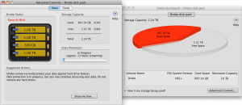
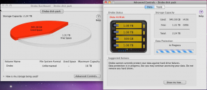

Friday, Oct 15:
After a couple of years of considering it, I finally bought a Drobo for home use.
Monday, Oct 18:
The Drobo (2nd generation) arrived and I set it up with my Mac Mini. I installed 1 1TB drive and 2 500GB drives. I set it up with HFS+ and configured email alerts, etc. as recommended. Then I started migrating data from the existing external 1TB drive.
Tuesday, Oct 19:
Added another 1TB disk that I removed from an old Seagate external drive. Everything seemed fine as I migrated the remaining data from the still existing 1TB external drive.
Wednesday, Oct 20:
All data had migrated to the Drobo and things had been working fine for a few hours. So, I unplugged the external drive, removed it’s 1TB Seagate drive, and replaced one of the 500GB drives with the 1TB drive. So, at this point the Drobo has 3 1TB drives and 1 500GB drive. The Drobo began to rebuild the Data Protection. It calculated it would take about 13 hours to complete.

Thursday, Oct 21:
At about 6a this morning (about 12 hours after replacing the drive) I got another critical alert notification that “Drobo cannot currently protect your data against hard drive failures.”
At about 9a the Mac Mini that the Drobo is connected to froze, so I had to power cycle that computer. When the Mac Mini finished rebooting, the Drobo was no longer connected to the Mac Mini. After attempting to reconnect the Drobo several times, I ended up power cycling the Drobo. It came back online and showed the file system for a several minutes, despite continuing to state that “Data Protection” was still in progress.
Then, a few minutes later the Drobo unmounted from the Mac Mini again, but it shows up as unmounted and unformatted in the Apple Disk Utility. At that point the Drobo Dashboard started showing the Drobo’s file system is now “Unformatted” instead of it’s original “HFS+” file system.
I suspect that one of my drives are bad, but the Drobo never tells me that and it is still “In Progress” of rebuilding the data protection.
Around 7p I received a 2nd reply from Drobo support:
Lets try this next then:
1. Power down the computer.
2. Disconnect Firewire, then power to the Drobo.
3. Eject all of the drives.
4. Reconnect Firewire, then power to the Drobo.
5. Wait for the Drobo to connect to the Drobo Dashboard.
6. Put the Drobo into standby: Drobo Dashboard > Advanced Controls… > Tools > Standby.
7. Disconnect Firewire, then power.
8. Re-insert all of the drives.
9. Reconnect Firewire, then USB.
Let me know if this enables the Drobo to complete it’s re-layout.
I followed those steps exactly, except for replacing “then USB” with “then power” in step 9 (which I presumed was a typo). 3 hours later it was still showing the filesystem as “unformatted” and “appox. 1 minute remaining” on the data protection rebuild.
Friday, Oct 22:
Still not working and no further response from Drobo. I’m stuck and frustrated, since I can’t really see what is happening behind the scenes with the Drobo.

Are there any Drobo ubergeeks out there that can help me?
 Studies show that approximately 45% of men are diagnosed with cancer at some point in their life. But an even bigger struggle for men is the battle with pornography. Studies show that approximately 53% of men have battled with pornography.
Studies show that approximately 45% of men are diagnosed with cancer at some point in their life. But an even bigger struggle for men is the battle with pornography. Studies show that approximately 53% of men have battled with pornography.{kind=link}
{kind=link}